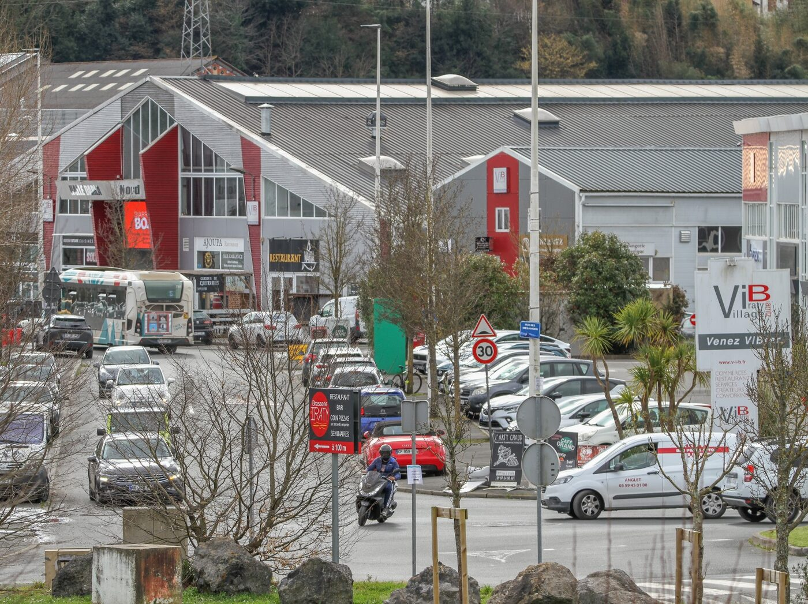
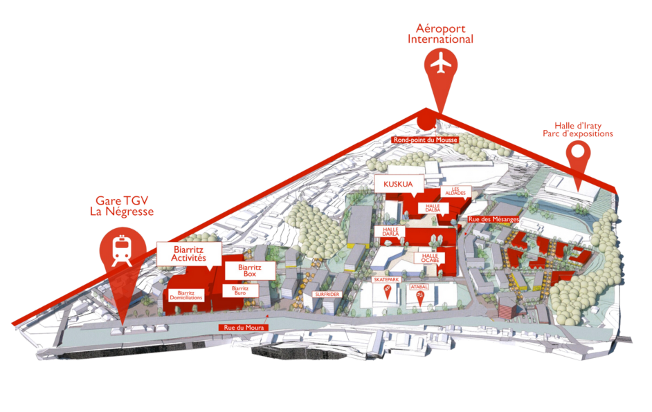
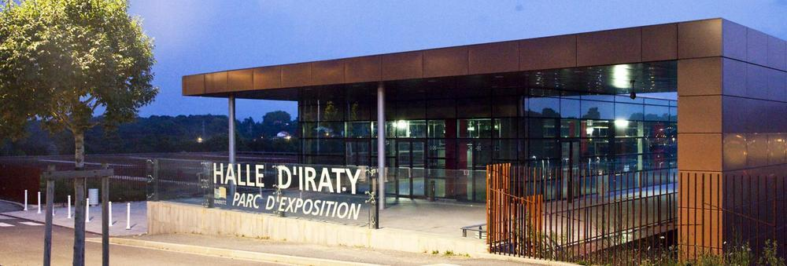

Le VILLAGE

Découvrir l'histoire du VILLAGE
Il s'est transformé en un lieu dynamique comprenant des commerces, des ateliers d'artistes, des espaces de coworking et bien plus encore.
Cette reconversion exemplaire, menée par la Société d'exploitation de BIARRITZ (SEBI), incarne le mariage réussi entre développement économique et respect de l'environnement.
La mixité, une valeur essentielle du VILLAGE Iraty-Biarritz
Mêler les artisans, les créateurs, les TPE et PME, la culture, les prestataires de services, les start-ups et les commerces de petites et moyennes surfaces, fait partie de notre vision de l'aménagement du VILLAGE Iraty-Biarritz. C'est aujourd'hui encore plus vrai que jamais.
Avec le désir d'encourager l'inventivité, l'innovation et la réussite locale, le VILLAGE Iraty-Biarritz permet à chacun de s'installer. La Société d'exploitation de BIARRITZ IRATY (SEBI) poursuit sa politique de loyer modéré pour favoriser et agréger la microéconomie locale.
Le VIB offre aux consommateurs un lieu marchand différencié, un lieu où les consommateurs trouvent une offre locale, une sélection de produits, un accueil dans un esprit et convivial de VILLAGE.

Comment venir ?
Le VILLAGE Iraty-Biarritz, c'est en premier lieu une localisation exceptionnelle. Tous les moyens de transport (Aéroport international, gare TGV, Autoroute) sont directement accessibles depuis le centre du VILLAGE Iraty-Biarritz.
Le VILLAGE Iraty-Biarritz est également desservi par quatre lignes de transport en commun : la ligne C, la ligne 5, la ligne 8, la ligne 10 et la ligne 12.
Pour autant et malgré cet environnement urbain favorable, sa topologie en fait un lieu préservé des nuisances sonores pourtant souvent liées aux voies de communication.


Un VILLAGE fédérateur
Le VILLAGE Iraty-Biarritz s'inscrit dans une opération de requalification urbaine. Outre son propre engagement, d'importants investissements ont été entrepris tant par des opérateurs publics que privés. Ces énergies ont donné naissance à :
- L'ATABAL, centre de musiques amplifiées, construit sous maîtrise d'ouvrage de la communauté d'agglomération
- Le collège d'Ostéopathie du Pays Basque
- Le siège européen de Surfrider Foundation Europe
- La Halle d'IRATY : parc d'expositions, de congrès et d'évènements, inaugurée en janvier 2010 et construite sous maîtrise d'ouvrage de la Communauté d'Agglomération
- Le plus grand Skate Park indoor de Nouvelle-Aquitaine